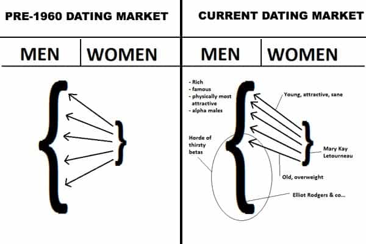
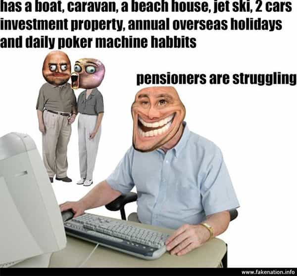

André is a young European who left his decaying country in 2012 for greener pastures. He enjoys exploring subterranean places, reading about a host of interconnected topics, and yearns for Tradition.


Boomers were the most privileged generation in contemporary history. Born at the dawn of the Trente glorieuses, they knew nothing for decades but growth, cheap tuition, full employment, easy sex with neither AIDS nor rapefugees nor rape hysteria.
During their carefree years, they took the moral high ground by protesting the Vietnam War or taking the streets, and the culture immediately started leaning towards them. They had no difficulty to go from being pampered students, drowning into New Age babble, booze and easy lays to shrewd bourgeois bohemians occupying every subsidized job and seizing every bonus.
Millennials like myself were born during the last years of this exceptional epoch. Just in time to see all the malignant lies creeping below the surface, all the parasites and exploiters hanging to their unwarranted earnings. Baby boomers got an awesome, in-building edifice, they leave it to us overpriced and full of cracks.
The worst part, though, is perhaps their total unwillingness to discuss the truth. Many boomers only accept a one-sided communication, where they do all the talk and we’re supposed to nod or parrot. From my experience, boomers tend to be honest fellows, but the majority of them tend to otherize their very children and drown into a SJW-like hysteria when we mention the following topics.

Many of us were raised into being nice, romantic, “respectful”, a bit chivalrous. Women’s lib was great, promiscuity is cool, just offer flowers and drinks and it’ll be okay. Then we met with the truth: women are hypergamous, will want only the higher-status males and consider the other, normal ones “beneath” them. Millions of young men has been fed lies, let unprepared, then disenfranchised. And some adapted by working on their game, looks, and general value.
Have you ever tried bringing this up with boomers? No matter how they actually live, they will answer that you’re a loser, a misogynist, an extremist. No, we’re just underprivileged like you never were—and we’re the only ones deprived of any possibility to be acknowledged as such.
As women turned into commitmentphobic creatures with boomers giving them passes, no wonder millennials do not create families and go into PUA-resourcefulness instead. Especially since we have witnessed divorce-rape, a related topic boomers won’t talk about.
This word used to stand for individuals going to live abroad. Today, it stands for millions of non-whites flooding the West, getting welfare and jobs. They are replacing native Westerners, and they are heavily promoted. “Affirmative action” happens so that they take jobs they aren’t qualified for. MTV and the like promote them. Judges give them a pass for their numerous crimes. Hyenas framed as sheep had our future handed out to them. But wait—who did that?
Boomers still hold cushy sinecures, unionized jobs—something millennials only hear of—and a comfy retirement that allow them to look down on us from their third property or their safari trip in Tanzania. We on the other hand do not need to go to Africa to see it.
As with the two aforementioned items, we can do it but not talk about it. Boomers have no problems with their children moving to foreign countries. At first glance it is easy to combine with globalism: yes, we were interested into discovering life elsewhere, getting new opportunities, picking up a new language, and so on, but we also escaped because of what Western girls turned into, because cities are expensive and insecure, because jobs are outsourced or handed out to the Big Other, because Leftism is stifling. More often than not, Western cities are no country for us.
Try to tell a boomer. Even if he relocated to an expensive house in the countryside, i.e. in a peaceful, non-diverse place, the lifelong fan of John Lennon will never admit he paid to escape from an immigration policy he supported. “Not in my backyard, not during my lifetime, deal with that you juvenile racist!”

Back in the 1960s and 70s, cities were socially diverse. Some neighbourhoods were rich, some were poor, some in the middle. There was barely any immigration. Most apartments and outlets belonged to people from inside the city or hard-working Westerners. Then came globalism.
Multinational corporations, backed by Wall Street, started buying out most “cool” hangouts. European countries used public housing to force “diversity” into previously peaceful places. The wealthy stopped going to hotels and started to buy downtown flats instead.
Boomers embodied the same trend. They bought out flats from crime-ridden neighbourhoods then got their connections to remove crime, thus “gentrifying” the area. The poor and traditional middle-classes were driven out. Instead, young city-dwellers are forced to either pay an astronomic rent or share their rented flat with others, or live in a diverse slum no “tough-on-crime” policy will ever clean.
You can talk a bit with boomers about how overpriced real estate is. They may listen as long as you let them put the blame on others. If you go a bit deeper, they’ll say, “Hey, you should just get yourself a better job, when I was your age I worked as a waiter and…”
Which brings us to the next point. Boomers were spoon-fed with decent jobs. They didn’t have to care about how to get modafinil (or even how to get a six pack). Today, the young apply for dead-end, crappy jobs or unpaid internships and compete with several other youngsters, many non-Western in origin. Too many jobs have been outsourced or automatized. The few jobs that remain, just like the lower 20% of women, are subjected to an intense competition. And the game is rigged against you. Just look at these lefty urban magazines where most writers are women and/or homosexual.
To get some attention from a recruiter, the dullest experience must be marketed like it “changed your life” and made you a world-class expert when you’re not even 21. Then you’ll have to face a dismissive, half-jaded boomer who is going to tell you he would better hire someone with a darker skin or a vagina. Or you will have your third or fourth internship.
Or, if you’re lucky, you’ll get a freelance job, but only after the aging hippie gets tired of Indian programmers coding bugged websites. And then your retired land-owning uncle asks, “what, even within a globalized world you still didn’t find a job?”
Some manage to flee the cities—and too many of those who flee forgot what exactly they escaped. Many others, though, cannot do so or must go on for several years before they get the money or the opportunity to leave the diverse hell behind. Violent thugs keep thugging with near impunity. “Diverse” groups fuel themselves with gangsta-rap and entertain an aggressive, violent, openly anti-white culture which seems to be a low-IQ, high-T version of SJW crybullying.
We, on the other hand, were not raised to fight. To the contrary, we got neutered by the blue pill. Civilized, law-abiding Westerners grow up to realize that they are an easy prey to “diversity” and antifa. In your own streets, built for you by your ancestors, you are now a stranger.
Henry Ford already told us of an arrogant, dominating group who pressured opponents just that way. Conservatives from Ben Shapiro to Vox Day told the same about Current Year SJWs. Thugs are also doing the same with a more violent style, all are cloaked under the same taboo. The day a BLM or SJW mob falls on you, boomer relatives will automatically assume you are the one to blame.
Along with the global warming fashion came a lot of noise about the world “we” (who exactly?) would leave to “our” children. Ironically, boomers barely care about what they leave their own sons. To the contrary, they seem to have massively shifted their heirs. Instead of caring about their sons and grandsons, they care about their daughters and so-called minorities.
In France the shift was symbolized by movies such as The Intouchables (2011), featuring a cool, sympathetic but forsaken old man helped by a funny and generous black guy, or Serial (Bad) Weddings (2014) which shows an old couple whose four daughters marry with a Jew, an Arab, a black and an Asian. Such movies depict a world where we simply do not exist—or only as rude, bothersome antagonists.
In 2015, France Télévisions president Delphine Ernotte told that “French TV is full of white males over fifty years old; this is going to change… so that we have young, female, diverse people.” In other words, when the old “white males” hit the pension jackpot, normal millennial men will be dismissed, excluding perhaps a few homosexuals and bourgeois bohemian shills.
Our inheritance is not completely eaten away. It is also handed out to the Big Other. Spoiled young women hit the streets to defend their “right” to kill their own children in the womb. Baby boomers who, either quietly or blatantly, disown their sons for not being slaves of the Left, fuel the same unhinged culture.
No, boomers, we were not persuaded by “fake news.” To the contrary, we have been subjected to a constant unnatural Leftist conditioning, then met with a rather uncomfortable reality you constantly ignored, dismissed, trivialized or made taboo. We spent years getting away from your neutering set of illusions. Hence our path from game and personal improvements to making the West great again. You briefly embraced the “no future” motto before picking the low-hanging jobs. We, on the other hand, want a future, for ourselves and our children.
Of course I know not all boomers are like that. Those who were factory or field workers and lost their jobs often grasped what diversity stood for before we did. But these are seldom heard.
Boomers complain that most millennials prefer speaking with other millennials instead of them. Well, if you’re a boomer and went that far, perhaps you understand why now. We don’t want your sanctimonious “life lessons” told from comfort and cowardice. We want help, acknowledgement, and getting back what the Big Other is stealing. If you can’t provide with that, you are free to keep squandering your oversized pension anyway.
Read Next: Bob Dylan’s “The Times They Are A-Changin” Is Our Song Now